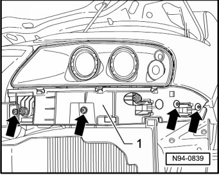
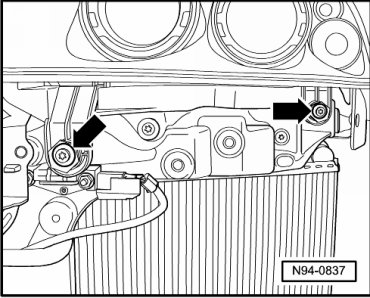
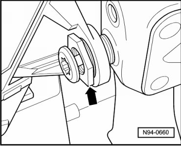

Procedures
Headlamps Correcting Installation Position
Special tools, testers and auxiliary items required
• Torque Wrench (V.A.G 1331/)
• Illustrations depict left headlamp.
When checking installation position of headlamp, determine that headlamp has no uneven gap dimensions to body, otherwise installation position must be corrected.
- Switch off ignition, switch off all electrical consumers and remove ignition key.
- Remove front bumper cover Removal and Installation.
- Remove mounting bolts - arrows - for guide profile of bumper cover - 1 -.

- Remove guide profile of bumper cover - 1 -.
- Loosen the two front mounting bolts - arrows - far enough until headlamp mount with headlamp can be moved back and forth lightly in adjustment bushings.

- Adjust the gap dimension by turning the adjustment bushing - arrow - in or out.

- Tighten the bolts on the headlamp mount to the specification --> [ Front Lamps ] [1][2]Headlamp.
- Check and if necessary correct installation position of headlamp again for uniform gap dimension.
- Install guide profile of bumper cover.
- Install front bumper cover Removal and Installation.
- Check headlamp for function.
• If a headlamp is adapted to the body, headlamp must always be adjusted after installing or after adapting.
- Check and adjust headlamp aim if necessary .